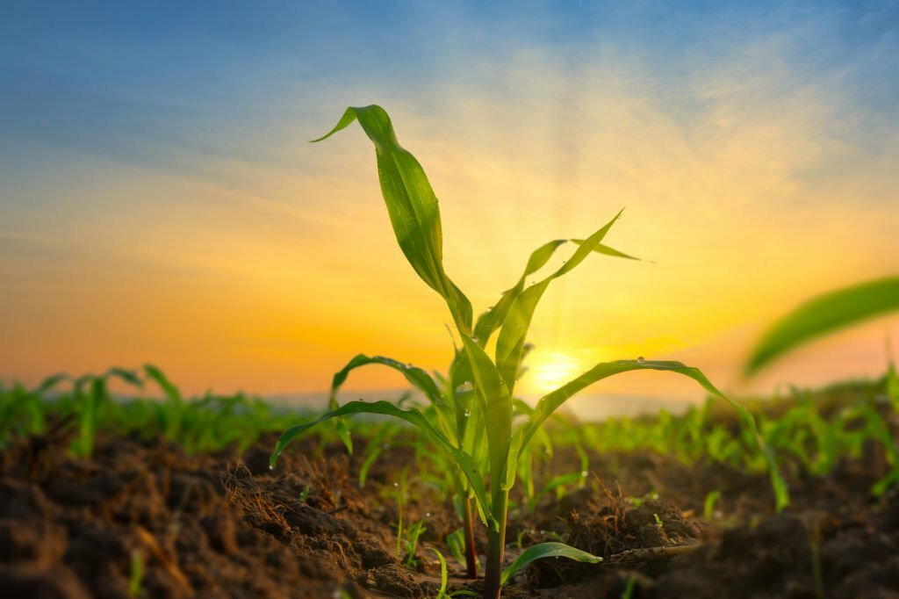

Cultivation
Because of this new technoogy farmers' cultivations are growing rapidly .
Pests Diseases
there can be more pest and deseases for harm to the farm.It can be identify easily.

Weather
Farmers can get ideas about the weather and weather analysis on past years and they can get more ideas from this.

New Crops
New technology as wel there may have new crops. Using this new crops farmers can get more advantages..
Resources
When use new technology to farming they need to have new resources as well..

We are here to motivate the farmers to build up their growings better than they think
Because now the farmers are suffering from many difficulties So they are trying to miss their growings. But now there are more new techno;ogies available to build up their growing better than as they think
Traditional Farming Is Now Outdated
Because there are more new technologies availbale and the traditional farming methods are more time consuming and very hard work are there. But still some countries ahs traditional farmin methods. Ther are more advantages from new technology with the afrming.
New farming technology is ongoing
Because of the new technology with the farming ther are more advantages as well because of it the farmers are now trying to do more farming .
Farmers can see their crops' information from their home
Farmers can see the information about temperature,water,weather and other information from their home by new technology.

Teenagers also now trying to do farming using new technology
Now some countries who haven't new technology to farming, teenagers are not like to farming because of some hardest things. As well which country has new technology to farming teenagers are tryimg to do afrming. So there are more advantages from this new technology with farming.
Most of countries are using this new technology for their farming
Across the globe, an increasing number of countries are embracing new technologies to revolutionize their agricultural practices. This widespread adoption of cutting-edge tools and innovations in farming signifies a transformative shift towards more sustainable, efficient, and resilient agricultural systems. Precision farming technologies, such as GPS-guided machinery and sensor-driven monitoring systems, have become integral components of modern agriculture, enabling farmers to optimize resource use and enhance productivity. Drones and unmanned aerial vehicles are being deployed for precision crop monitoring, disease detection, and yield prediction, providing farmers with invaluable insights. Automation, including robotic tractors and smart irrigation systems, is reducing labor demands and improving the precision of tasks, resulting in increased efficiency and reduced environmental impact.

Biotechnology tools like CRISPR are revolutionizing crop breeding, allowing for the development of varieties with enhanced resistance to pests, diseases, and changing climate conditions. Countries are also leveraging blockchain technology to enhance transparency and traceability in their agricultural supply chains, fostering trust among consumers. This global shift towards incorporating advanced technologies in agriculture is not only driven by the pursuit of increased yields but also by the imperative to address environmental sustainability and food security challenges. By embracing these innovations, countries are positioning themselves at the forefront of a tech-driven agricultural revolution that holds the promise of meeting the demands of a growing population while safeguarding the planet's resources